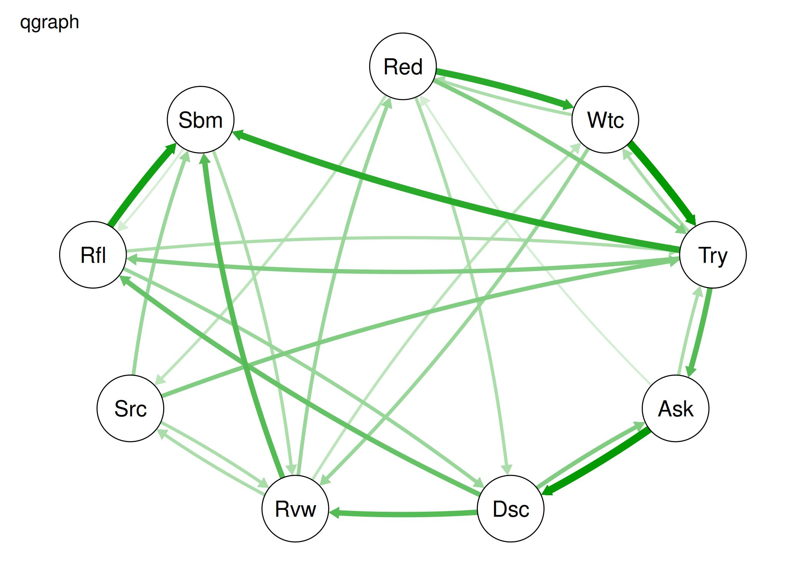
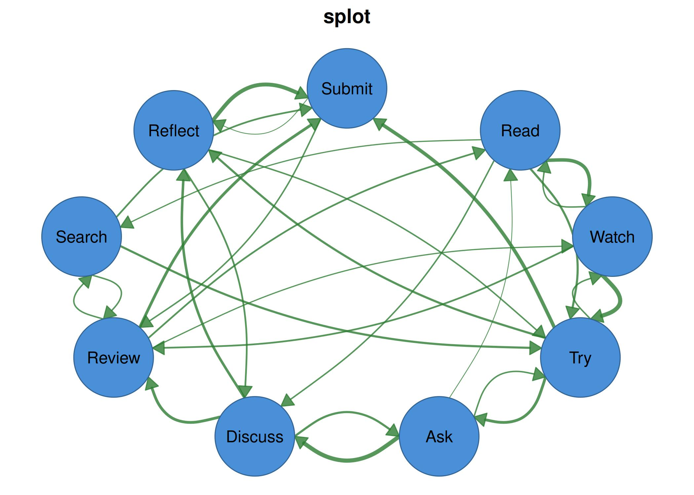
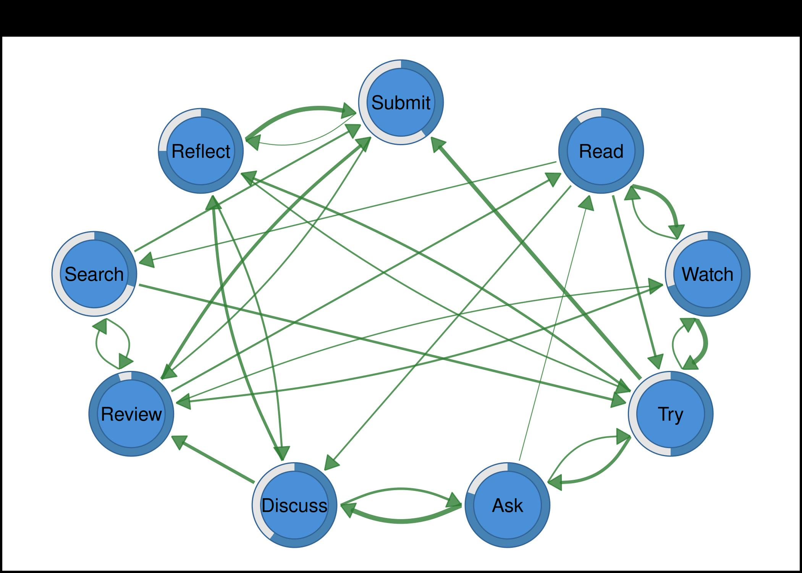
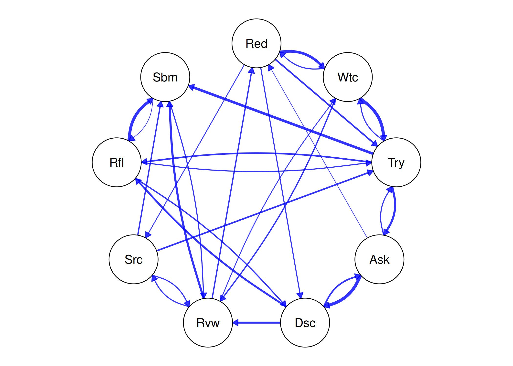
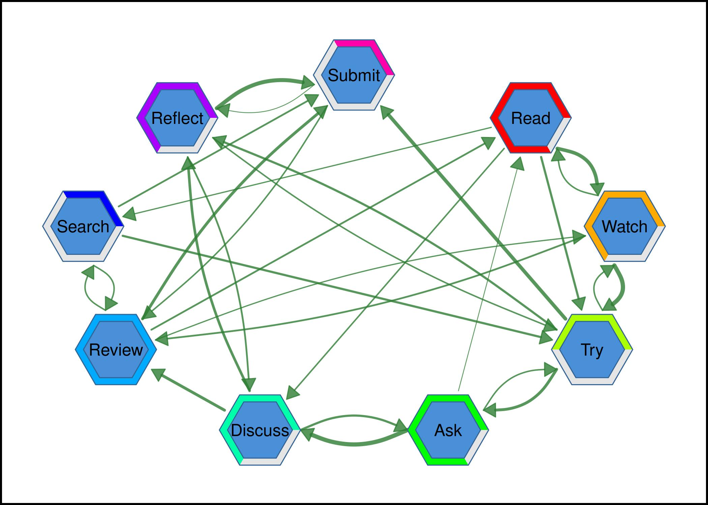
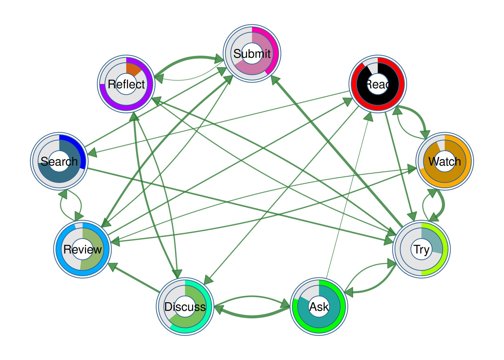

This guide introduces splot(), the main plotting
function in cograph, and helps qgraph users
transition to it.
About splot
splot() is the primary plotting engine of
cograph. It renders network graphs using base R graphics
and is designed to work across a wide range of use cases: transition
networks from learning analytics, correlation networks from psychology,
social networks, and any weighted or unweighted graph structure. It
accepts adjacency matrices, edge lists, igraph objects, tna objects, and
qgraph objects directly, so it fits into existing workflows without
requiring format conversion.
The function is built to be useful at every stage of analysis. A
single call like splot(mat) produces a clean, readable plot
with sensible defaults. But when you need more, the same function
supports confidence interval underlays on edges, significance stars
derived from p-values, templated edge labels that combine estimates with
CI ranges and stars (e.g., 0.25*** [0.12, 0.38]), pie and
donut charts on nodes, and publication-quality export at 600 DPI. The
goal is that you should not need to switch tools as your analysis moves
from exploration to a final manuscript figure.
Naming conventions
One of the deliberate choices in splot() is a
consistent, predictable parameter naming system. Every parameter is
prefixed by the element it controls – node_,
edge_, label_, donut_,
pie_, edge_label_, edge_ci_ –
followed by the property: size, color,
fill, width, alpha, and so on. So
node_fill is the node fill color,
edge_label_size is the edge label font size,
donut_border_color is the donut border color, and
edge_ci_alpha is the confidence interval underlay
transparency. The naming is designed so that once you learn the pattern,
you can guess parameter names without checking the documentation. This
contrasts with conventions like vsize, posCol,
border.width, label.cex, and
pieColor, where every parameter follows a different
convention and needs to be memorized individually.
Statistical annotations
Network plots in research often need to communicate uncertainty and
significance alongside the graph structure itself. splot()
treats this as a first-class concern rather than an afterthought. Edges
can carry confidence interval underlays (edge_ci) –
semi-transparent bands behind each edge whose width reflects the
uncertainty of the estimate. Edge labels can be built from templates
(edge_label_template) using placeholders like
{est}, stars, {low},
{up}, {range}, and {p}, which are
filled in from vectors of CI bounds and p-values that you supply.
Significance stars are computed automatically from p-values when
edge_label_stars = TRUE. These features mean that a single
splot() call can produce a network where every edge shows
its weight, its significance level, and its confidence interval –
information that would otherwise require post-processing or manual
annotation.
Inputs and compatibility
splot() accepts square adjacency matrices, data frames
with edge lists (from, to, weight columns), igraph objects, cograph
network objects, tna objects, and qgraph objects. For users migrating
from qgraph, the from_qgraph() function
converts a fitted qgraph object into splot parameters, and
tplot() provides a wrapper that accepts qgraph-style
parameter names (vsize, edge.labels,
posCol) for a smoother transition.
Create a transition matrix
states <- c("Read", "Watch", "Try", "Ask", "Discuss",
"Review", "Search", "Reflect", "Submit")
mat <- matrix(c(
0.00, 0.25, 0.15, 0.00, 0.10, 0.00, 0.08, 0.00, 0.00,
0.10, 0.00, 0.30, 0.00, 0.00, 0.12, 0.00, 0.00, 0.00,
0.00, 0.10, 0.00, 0.20, 0.00, 0.00, 0.00, 0.15, 0.25,
0.05, 0.00, 0.10, 0.00, 0.30, 0.00, 0.00, 0.00, 0.00,
0.00, 0.00, 0.00, 0.15, 0.00, 0.20, 0.00, 0.18, 0.00,
0.12, 0.08, 0.00, 0.00, 0.00, 0.00, 0.10, 0.00, 0.20,
0.00, 0.00, 0.15, 0.00, 0.00, 0.10, 0.00, 0.00, 0.12,
0.00, 0.00, 0.10, 0.00, 0.12, 0.00, 0.00, 0.00, 0.28,
0.00, 0.00, 0.00, 0.00, 0.00, 0.10, 0.00, 0.05, 0.00
), nrow = 9, byrow = TRUE, dimnames = list(states, states))Parameter mapping
Node parameters
| qgraph | splot | Notes |
|---|---|---|
vsize |
node_size |
Same scale |
shape |
node_shape |
“circle”, “square”, “triangle”, etc. |
color |
node_fill |
Node fill color |
border.color |
node_border_color |
|
border.width |
node_border_width |
|
labels |
labels |
TRUE, FALSE, or character vector |
label.cex |
label_size |
|
label.color |
label_color |
Edge parameters
| qgraph | splot | Notes |
|---|---|---|
edge.color |
edge_color |
|
edge.width |
edge_width |
|
edge.labels |
edge_labels |
TRUE shows weights |
edge.label.cex |
edge_label_size |
|
lty |
edge_style |
1=solid, 2=dashed, 3=dotted |
curve |
curvature |
Curve amount |
asize |
arrow_size |
Arrow head size |
posCol |
edge_positive_color |
Positive weight color |
negCol |
edge_negative_color |
Negative weight color |
minimum |
threshold |
Min weight to display |
directed |
directed |
TRUE/FALSE/NULL (auto) |
Example 1: Default plot
qgraph(mat, layout = "circle", vsize = 9, title = "qgraph")
splot(mat, node_size = 9, title = "splot")
Example 2: Edge labels
qgraph(mat, layout = "circle", vsize = 9, edge.labels = TRUE, title = "qgraph")
splot(mat, node_size = 9, edge_labels = TRUE, title = "splot")
Example 3: Custom edge colors
qgraph(mat, layout = "circle", vsize = 9, posCol = "maroon", negCol = "red", title = "qgraph")
splot(mat, node_size = 9, edge_positive_color = "maroon",
edge_negative_color = "red", title = "splot")
Example 4: Node shapes and colors
cols <- palette_pastel(9)
qgraph(mat, layout = "circle", vsize = 9, shape = "square", color = cols, title = "qgraph")
splot(mat, node_size = 9, node_shape = "square", node_fill = cols, title = "splot")
Example 5: Curved edges
qgraph(mat, layout = "circle", vsize = 9, curve = 0.3, curveAll = TRUE, title = "qgraph")
splot(mat, node_size = 9, curvature = 0.3, curves = "force", title = "splot")
Example 6: Donut nodes
fills <- c(0.9, 0.7, 0.5, 0.8, 0.6, 0.95, 0.3, 0.75, 0.4)
qgraph(mat, layout = "circle", vsize = 9, pie = fills, pieColor = "steelblue", title = "qgraph")
splot(mat, node_size = 9, donut_fill = fills, donut_color = "steelblue", title = "splot")
Example 7: Using qgraph’s layout in splot
splot() accepts a qgraph object’s layout matrix
directly.
q <- qgraph(mat, layout = "spring", vsize = 9, title = "qgraph spring layout")
splot(mat, layout = q$layout, node_size = 9, title = "splot using qgraph layout")
Example 8: Converting existing qgraph objects
Use from_qgraph() to convert a qgraph object
directly.
q <- qgraph(mat, layout = "circle", vsize = 9, theme = "colorblind", title = "Original qgraph")
from_qgraph(q)
Example 9: Extracting and tweaking qgraph parameters
params <- from_qgraph(q, plot = FALSE)
params$node_fill <- palette_rainbow(9)
params$title <- "Tweaked from qgraph"
do.call(splot, params)
Example 10: tplot for qgraph-style parameter names
tplot() accepts qgraph-style parameter names like
vsize, edge.labels, and
posCol.
tplot(mat, vsize = 9, edge.labels = TRUE)
Features unique to splot
CI underlays
net <- cograph(mat)
ne <- nrow(get_edges(net))
set.seed(42)
ci_widths <- runif(ne, 0.1, 0.4)
splot(mat, node_size = 9,
edge_ci = ci_widths,
edge_ci_scale = 5,
edge_ci_alpha = 0.3)
CI range labels
ci_lower <- runif(ne, 0.01, 0.10)
ci_upper <- runif(ne, 0.20, 0.50)
splot(mat, node_size = 9,
edge_label_template = "{est} [{low}, {up}]",
edge_ci_lower = ci_lower,
edge_ci_upper = ci_upper,
edge_label_size = 0.4)
Edge label templates with significance stars
p_values <- round(runif(ne, 0.0001, 0.08), 4)
splot(mat, node_size = 9,
edge_label_template = "{est}{stars}",
edge_label_p = p_values,
edge_label_stars = TRUE)
Pie chart nodes
set.seed(42)
pie_vals <- lapply(1:9, function(i) {
v <- runif(3)
v / sum(v)
})
splot(mat, node_size = 9,
pie_values = pie_vals,
pie_colors = rep(list(c("#E41A1C", "#377EB8", "#4DAF4A")), 9))
Polygon donut shapes
splot(mat, node_size = 9,
donut_fill = fills,
donut_color = palette_rainbow(9),
donut_shape = "hexagon")
Double donuts
splot(mat, node_size = 9,
donut_fill = fills,
donut_color = palette_rainbow(9),
donut2_values = lapply(1:9, function(i) runif(1)),
donut2_colors = lapply(palette_colorblind(9), function(x) x))